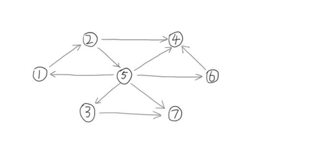

Tarjan算法求强连通分量
本文最后更新于 2024年7月11日 晚上
知识前置
罗伯特·塔扬
图灵奖得主，追求坚持和创新。
发明了许多算法，持续在数学和计算机领域发光发热。
并查集、Toptree、Splay等算法都是他发明的。
DFS序
在对树进行深度优先搜索遍历时，对于每个节点，在刚进入递归后记录一次该点的编号，得到的最后产生的长度为 $N$ 的节点序列。
设点 $u$ 入栈时时间为 $dfs_u=l_u$，出栈时时间为 $r_u$，若 $v\in T_u$，则 $dfn_v\in[l_u,r_u]$。详见OI-Wiki。
DFS搜索树
如图所示，在一个有向图上跑DFS所生成的树。
DFS搜索树的所有边都由原图中的边组成。
有以下几条边：
1.树边：表示DFS搜索顺序；
2.横叉边(斜向边)：兄弟节点之间的边；
3.前向边：由祖先指向儿子的边(不包含父亲)；
4.返祖边(后向边)：由子节点指向父亲或祖先的边。
对于后三种边，要求指向的节点已被访问。一般意义上，“搜索树上的边”仅指树边。
如图所示：

强连通分量
本文所述的强连通是对于有向图而言的。
若有向图 $G=(V,E)$ 强连通，则说明对于 $\forall u,v\in V$，总存在路径 $u\rightsquigarrow v$，使得 $u$、$v$ 两点联通。强连通分量指极大的强联通子图。
栈
先进后出的数据结构，详见OI-Wiki。
写在前面
约定：$T_u$ 表示以 $u$ 为根的子树，且包含 $u$；一个点的祖先不包括其父节点。
注意：DFS序 $\neq$ DFN。
DFN是一个时间戳，是一棵树在DFS过程中访问的相应次序。
DFS序记录了树上每个点进出的时间戳。
DFS生成树与强连通分量的关系
如果节点 $u$ 是DFS过程中遇到的第一个强连通分量中的点，则强连通分量中剩余的节点一定在 $T_u$ 中。我们称 $u$ 为强连通分量的根。
Tarjan算法求强连通分量
信息
点集 $S$ 表示 $T_u$ 中的节点及从 $T_u$ 通过一条不在搜索树上的边能到达的节点。
$dfn_u$：点 $u$ 第一次被遍历的时间。
$low_u$：在 $T_u$ 中能够回溯到最早的已经在栈中的节点的 $dfn$，且 $low_u=\min\limits_{v\in S}dfn_v$。至于为什么这两个是一个意思，后面会解释到。
$scc_u$：答案统计，表示 $u$ 在哪个强连通分量中。
性质
从根节点开始的一条路径中，$dfn$ 严格递增，$low$ 严格非降。即，$dfn_{fa}<dfn_u$，$low_{fa}\le low_u$。
$dfn$ 递增性质可由定义得知。由于子节点的 $low$ 会被父节点取一次 $\min$，所以父节点的 $low$ 会大于或等于子节点的，$low$ 数组满足非降性质。
维护
从根节点开始DFS，让搜索到的点入栈。每找到一个强连通分量就让强连通分量中的点出栈。
正确性：由于强连通分量是极大的联通子图，所以不会出现一个强连通分量包含另一个的情况。另外，使用栈维护，先进后出，可以确保当前强连通分量仅处于栈顶及附近位置，弹出时不会干扰到上层强连通分量的检索和记录。
假设当前搜索到了点 $u$ ，先将点 $u$ 入栈。设 $u$ 可通过边 $e=u\rightarrow v$ 到达点 $v$，则：
1.若 $v$ 未被访问，说明 $e$ 是搜索树上的边，$v\in T_u$。根据定义，$low_u=\min{low_u,low_v}$。此时需继续对 $v$ 进行DFS。
2.若 $v$ 已被访问且在栈中，说明 $v\notin T_u$，$e$ 也不在搜索树中。根据定义，$low_u=\min{low_u,dfn_v}$。此时不可继续对 $v$ 进行DFS，否则会死循环，且不满足 $low$ 的定义，答案正确性无法保证。
3.若 $v$ 已被访问且未在栈中，说明 $v$ 已搜索完毕，且所在强连通分量已被处理，无需进行任何操作。
答案处理
根据 $low$ 的定义，当且仅当节点 $u$ 为强连通分量的根时，$dfn_u=low_u$。
因为在强连通分量中，所有点都可到达根 $u$。这些点的 $low$ 值只可能大于或等于 $u$。
另外，强连通分量的剩余节点都在 $T_u$ 且都已搜索入栈，所以栈中 $u$ 之上的都是强连通分量中的点，而在 $u$ 之下的都不是。
统计答案只需弹栈，弹完 $u$ 为止，弹栈前 $cnt$ 需要加一，表示新的强连通分量。设 $x$ 为栈顶元素，只需将 $scc_x$ 设为标记 $cnt$ 即可。
关于 $low$ 的问题解答
Q: 为什么 $low$ 也是在 $T_u$ 中能够回溯到最早的已经在栈中的节点的 $dfn$？
A: 分析上述维护过程，前两种情况中的 $v$ 都在栈中。(情况1在对 $v$ DFS之后 $v$ 就进了栈。)
Q: 为什么需要一个 $low$ 辅助算法完成？为什么这样设计 $low$？
A: 通过 $low$ 的特殊性质，可以保证算法实现简便，同时有正确的答案和相当优秀的时间复杂度。至于如何想出来的，只能说是Tarjan的神力。
代码实现
洛谷B3609 强连通分量
题目描述
给定一张 $n$ 个点 $m$ 条边的有向图，求出其所有的强连通分量。
代码
AC 2.36MB 8ms
1 | |
注意事项
无特殊说明，图均可能不连通，且均可能有重边或自环，所以特判千万不能忘！
一般关于scc的题目，都需要循环 $1\sim n$ DFS，以寻找全部的强连通分量。
总结
Tarjan算法求强连通分量关键在于 $low$ 的理解与运用。Tarjan算法还有许多变形，需要根据情况调整代码解决问题。